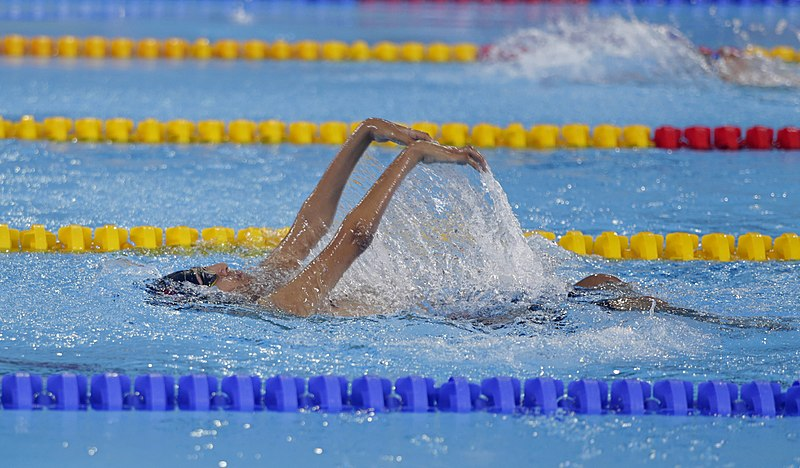
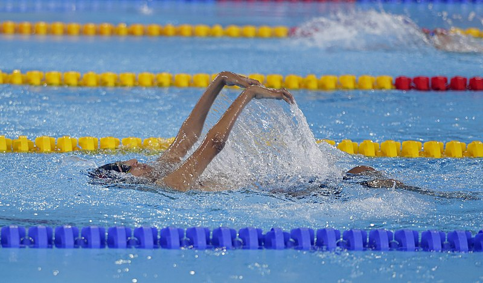

Hello my name is Amaan and I am a 16 year old student who is in grade 11 and I love to play sports such as Basketball,swimming and baseball.
I have played Basketball house league for multiple years. I am also a Junior Life Guard for Ontario and have done competetive swimming for The Mississauga Swim Team.
During the summer, I love to go outside and play Basketball with my friends and also go swimming.
.jpg) 

During my free time I like to read novels, play video games, and watch on platforms such as Youtube and Netflix.
Some of my favourtie games are GTA 5, Valorant, COD Warzone, Rainbow 6 Seige, and a game that I am really excited for is Gotham Knights.

I am a HUGE fan of the DC Universe and find it more better than Marvel.
my favourite heros are Batman(ofc),John Constantine, Etrigan, Flash, and Dinah Lance.
My favorite movies would be The Dark Knight, Jurassic Park Series, and Kong VS Godzilla. In the animated section it would be Justice League:Flash Point Paradox, Suacide Squad: Hell to Play, and Justice League Dark: Apokalips War.


My future aspirations are to become a Computer Scientist, and/or a Buisness Man. I want to go to the University of Waterloo as they have a heavily funded Computer Science division and are recognized by huge companies.